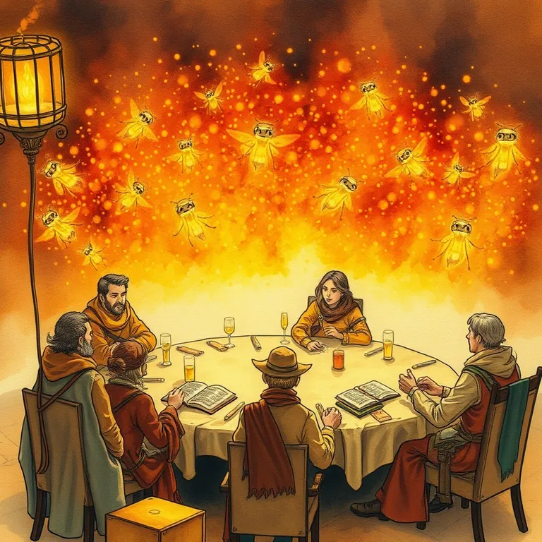

Fireflies.ai

The fireflies worked for free, forever, which the council found either generous or deeply suspicious.
Fireflies.ai is best used for sitting silently in every meeting so nobody on the party has to scribble notes while also trying to talk. Meetings are where good quests get decided and forgotten in the same breath. A permanent scribe means the decisions actually survive until next week's council. It lands at #3 of 51 on Solos Gems (8.4/10) for meetings & notes.
The fireflies worked for free, forever, which the council found either generous or deeply suspicious. Turns out the light was real. The suspicion mostly wasn't warranted.
- Value for price9/10
- Capability8/10
- Ease of use8.5/10
- Trial safety9.5/10

Joins the call, takes the notes, and never once asks for a bathroom break.
Peek from fireflies.ai. We scouted the storefront ourselves, we haven't lived inside the dungeon full-time.Best used for
Sitting silently in every meeting so nobody on the party has to scribble notes while also trying to talk.
How it helps the realm
Meetings are where good quests get decided and forgotten in the same breath. A permanent scribe means the decisions actually survive until next week's council.
Boons
- Joins the call, takes the notes, and never once asks for a bathroom break.
- Searches across every past meeting transcript at once, which beats digging through a chest of old scrolls.
- The free tier records a generous number of meetings before anyone needs to pay a toll.
Curses
- It transcribes everything faithfully, including the part where you rambled for four minutes about lunch.
- Some guests get uneasy about an invisible scribe joining their call uninvited.
See how this compares to Otter.ai →
Common questions
Does it work with the video-call tools I already use?
Yes, it joins most common meeting platforms without extra setup.
Can I search past meetings for one specific thing someone said?
Yes, full-text search across your meeting history is one of its strongest features.
Does it only work in English?
No, it handles multiple languages, useful for a party with adventurers from several kingdoms.